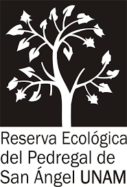
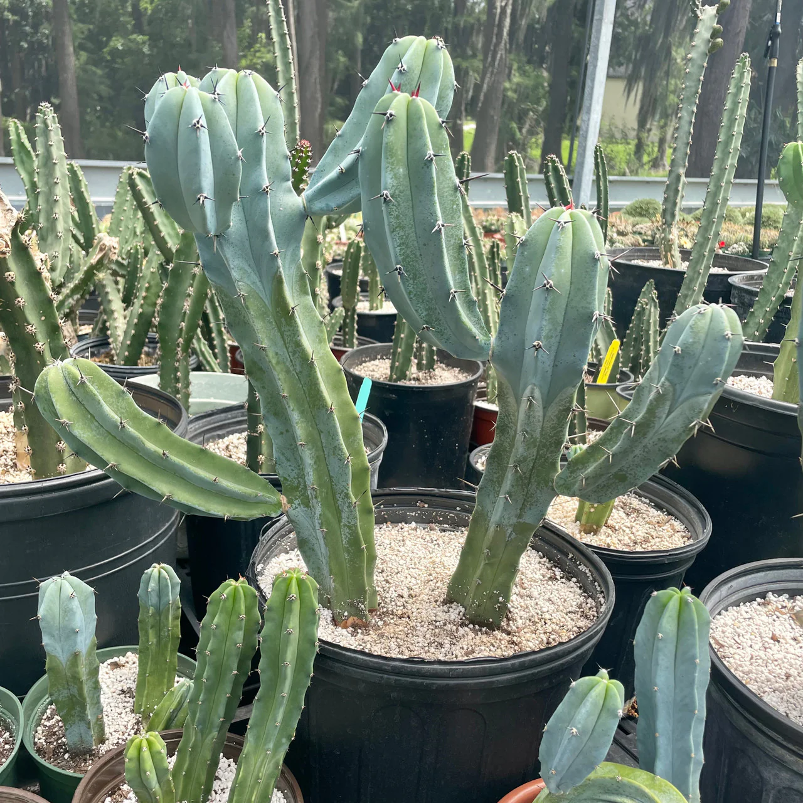

Demo académico web AR
Laboratorio de realidad virtual y realidad aumentada en colaboración con el Herbario de la Facultad de arquitectura

Myrtillocactus geometrizans
El Myrtillocactus geometrizans es un cactus ramificado, de aspecto arbustivo, que alcanza 4 metros de altura. En el tallo tienen unas 5-6 costillas, un tacto suave y un bonito color azulado que se volverá verde en las partes más viejas de la planta. Suele tener pequeñas espinas y no muy abundantes. Produce pequeñas flores blancas que surgen de la parte superior del cactus. Florece en primavera. Si lo cultivamos en maceta puede tardar unos cuantos años en florecer. Los frutos, de color azul, se consumen en países como México.
Cómo usar este demo
- Abre esta página desde un celular compatible.
- Explora el objeto directamente en el visor.
- Activa el modo de realidad aumentada con el botón en la esquina del visor 3D.
- Apunta hacia una superficie estable para posicionar el modelo en el espacio físico.
Propósito académico
Este demo funciona como una base explicativa para comprender cómo un modelo digital puede ser publicado en web, visualizado en tres dimensiones y proyectado en realidad aumentada desde el celular. Su intención es apoyar el desarrollo de ejercicios iniciales, pruebas de concepto y propuestas académicas de carácter exploratorio.